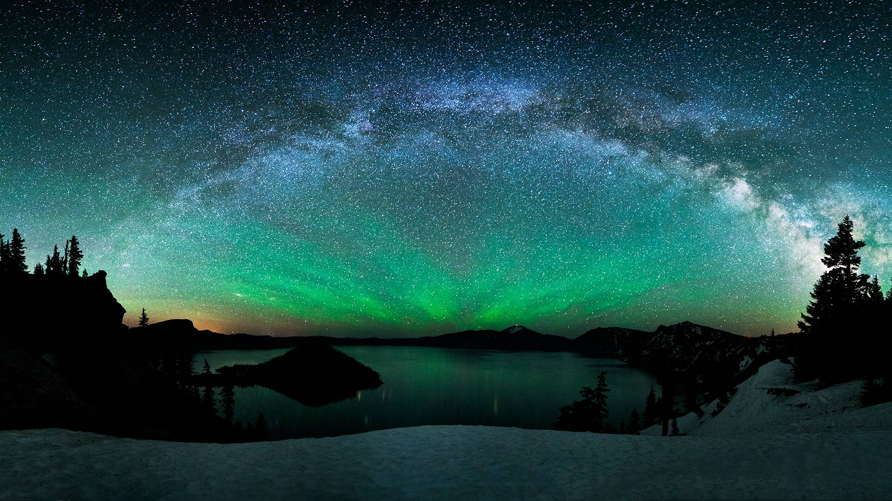
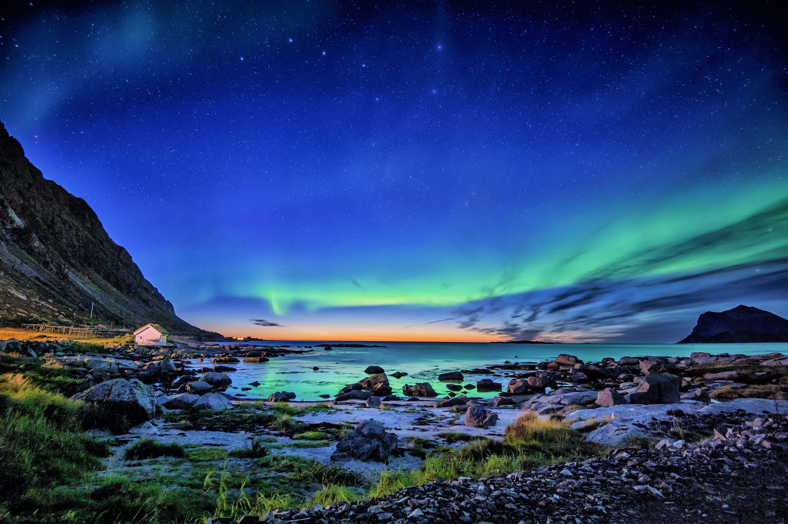
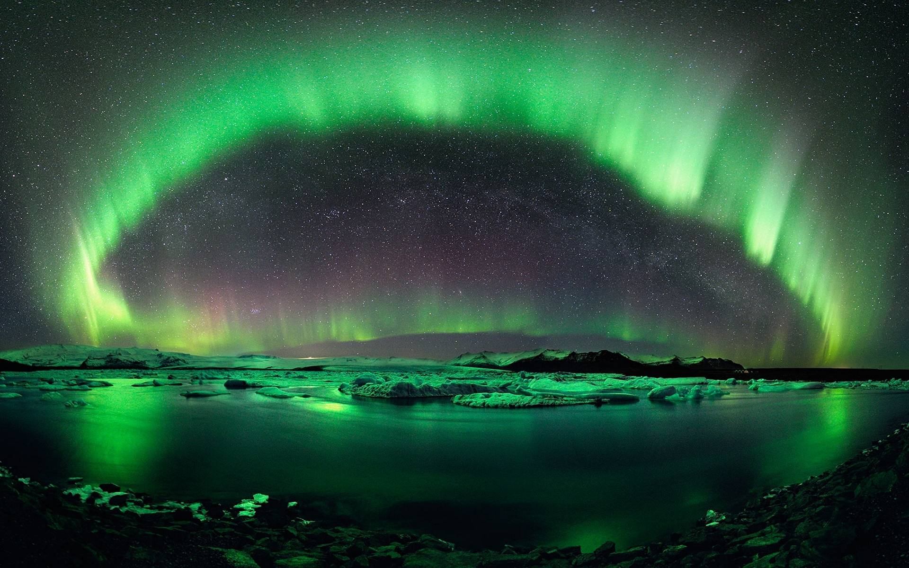

PERSONAL PORTFOLIO
用镜头与画笔，
用镜头与画笔，
讲述我眼中的世界。
我是陈海翔，一名专注风光、人像与动画视觉的影像创作者。作品涵盖极北星空、人文纪实与宫崎骏式幻想世界，致力于让每一帧都拥有风格与情绪。
风光摄影
人像摄影
动画视觉
后期合成
光影叙事
SCENERY
风景掠影
五幅我拍摄的极北风光，从极光到雪山，记录辽阔与纯粹。



PROJECTS
项目作品
多个代表作品，涵盖风光、人物与动画三大部分。
ABOUT ME
关于我
CONTACT
联系方式
欢迎老师、同学与企业招聘伙伴联系我。
☎
电话 / 合作洽谈
110 1101 111110
✉
电子邮件
chx@portfolio.cn
⚲
创作驻地
中国 · 北方
◎
可承接
风光 / 人像 / 视觉